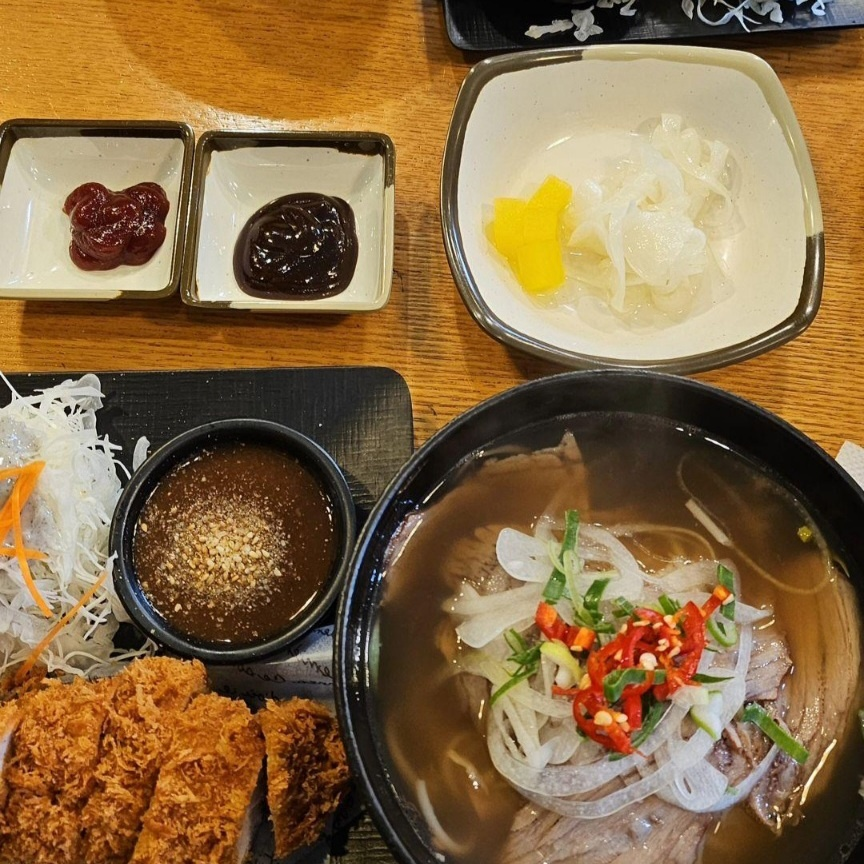

나를 소개하기
근처 맛집 뿌시기

포돈:포36거리라는 이름보다 익숙한 포돈정식..ㅎㅎ
레이브피자:엄청난 비주얼에 상응하는 맛
신내떡:감자튀김이 신의 한 수
보미해장국:한국인은 밥심
 츄르츄르라멘:연어 못잃어..
츄르츄르라멘:연어 못잃어..
내가 좋아하는 것
- 수박
여름은 별로 안좋아하지만 수박이 너무 좋아서 여름이 좋아졌어요
수박은 매년 많이 먹지만 겨울이 되면 좀 더 먹어둘 걸 하는 아쉬움이 항상 남아요
여담이지만 저는 씨없는 수박을 먹어본 적이 없어요..! 수박을 사랑한다면 씨까지 품어줘야 한다고 생각합니다(농담이에요)
- 음악 듣기
현대인 도파민 필수품
반박은 새로운 노래(=도파민) 추천으로 받겠습니다.
자주 듣는 몇 곡 공유해요
- sunset-엔플라잉
이건 라이브 버전이 진짜 좋음...bb
- 심야영화-하현상
- Let's-호피폴라
- Knowhow-루시
요즘 밴드 음악을 많이 듣는데 평소에는 아이돌 노래도 많이 들어요! 사실 크게 장르를 안가려서.. 그냥 자아 없이 듣는 편입니다.
- 맛집 도장 깨기
숙대는 주변에 맛집이 정말 많은 것 같아요
그래서 아직 학식은 한 번 밖에 못먹어 봤어요..ㅎㅎ
매일 다른 곳에 가도 안가본 곳이 훨씬 많이 남았다니 행복합니다
이상으로 얼렁뚱땅 자기소개 마무리합니다 ~.~